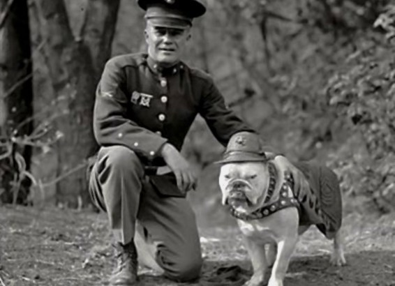

Chesty Puller and the first Marine Corps Mascot "Sgt. Jiggs" 1926
Here's a time line of Chesty Puller's life:
- 1898 - born West Point Virginia.
-
1918 - enlisted in the United States Marine Corps and attended recruit
training at Marine Corps Recruit Depot, Parris Island, South Carolina.
- 1919 - appointed 2nd lieutenant in the reserves.
- 1924 - received his permanent commission.
-
1955 - after suffering a stroke General Puller retired from the USMC.
- 1971 - died Hampton Virginia.
"Old Breed? New Breed? There's not a damn bit of difference as long as
it's the Marine breed."
~Chesty Puller